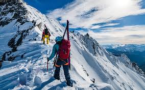
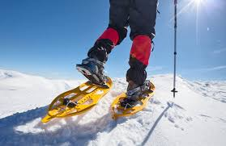
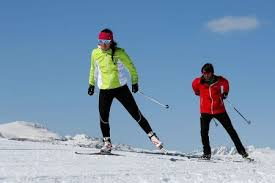
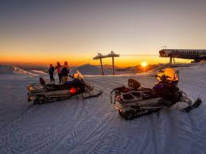

Sci alpino

Goditi la velocità e l'emozione dello sci alpino lungo le piste ben preparate della montagna.
Con una vasta gamma di dislivelli e piste adatte a tutti i livelli di abilità, dal principiante al professionista,
lo sci alpino è un'attività perfetta per gli amanti della neve. Affitta l'attrezzatura direttamente sul posto e prendi
lezioni con istruttori qualificati per migliorare le tue capacità e divertirti al massimo sulla neve.
Escursioni con le ciaspole

Esplora la magia della montagna invernale con escursioni guidate utilizzando le ciaspole.
Cammina attraverso paesaggi innevati e boschi incantati, scoprendo la tranquillità e la bellezza dell'inverno.
Le ciaspole ti permettono di muoverti facilmente sulla neve profonda e offrono un modo unico per immergerti nella
natura invernale. Partecipa a tour guidati per esplorare i migliori percorsi e imparare di più sulla flora e fauna
locali durante la stagione fredda.
Sci di fondo

Scivola attraverso paesaggi innevati con lo sci di fondo su piste ben battute che si snodano
tra boschi e valli. Lo sci di fondo è un'attività adatta a tutte le età e livelli di fitness, offrendo un'esperienza
rilassante e gratificante nella natura invernale. Affitta l'attrezzatura in loco e partecipa a lezioni per imparare le
tecniche di base o per perfezionare le tue abilità con istruttori qualificati. Goditi la tranquillità della neve mentre
esplori nuovi percorsi e ammiri i panorami innevati.
Escursioni in motoslitta

Sperimenta l'avventura e l'adrenalina delle escursioni in motoslitta attraverso paesaggi innevati e
sentieri panoramici. Guida la tua motoslitta attraverso boschi innevati e valli ghiacciate, esplorando luoghi altrimenti
inaccessibili durante l'inverno. Partecipa a tour guidati con guide esperte che ti condurranno attraverso i migliori
percorsi e ti faranno scoprire la bellezza dell'inverno in montagna. Un'attività emozionante adatta a chi cerca un'esperienza
indimenticabile sulla neve.
L'evento non è sfruttabile direttamente ad Artesina, ma è possibile raggiugere in breve tempo Prato Nevoso, dove è invece possibile l'affitto di un giro in motoslitta